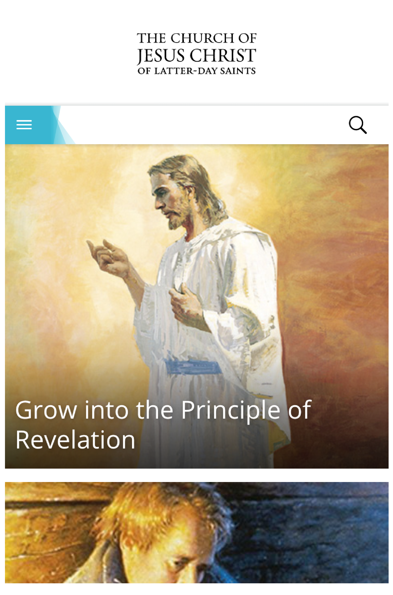
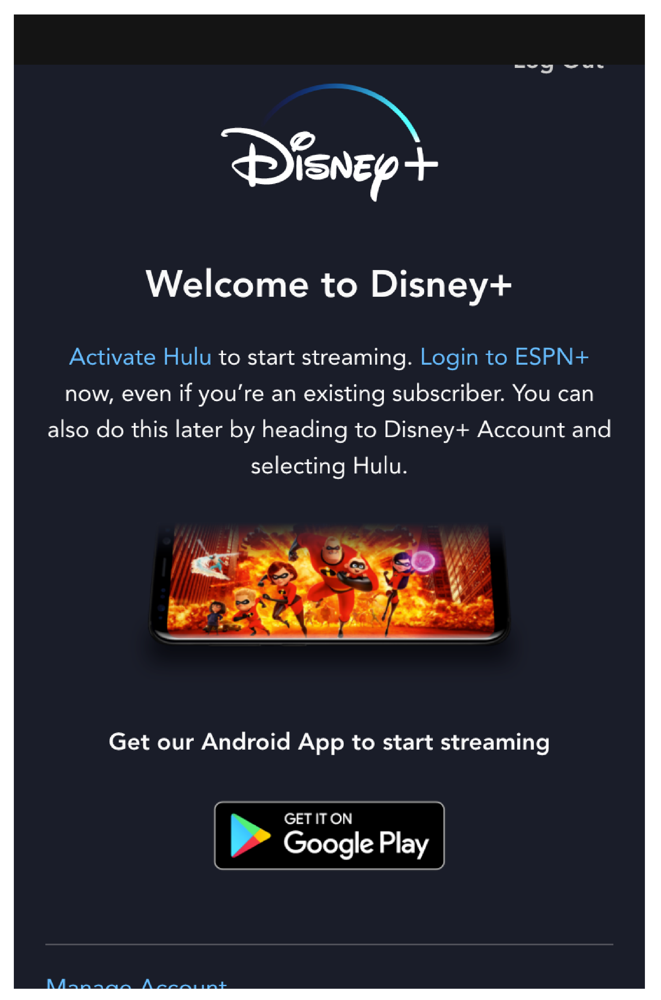

Proximity
Melaleuca
melaleuca.comIn this site we see great use of Proximity. The links are all located near connected relevant material. The set of links located in the middle of the page are related in purpose, to teach the user and give them information on specific topics. This creates an easy to use location for many similar purposes. They have a similar look and therefore remind you they have a related purpose.
Fitt's Law
The Church of Jesus Christ of Latter-Day Saints
churchofjesuschrist.org Here we see a good example of Fitt’s Law. The larger the button and the closer it is, the easier it is to get the user where they want to go. In this case, this site is often used for inspirational videos, so you scroll until you find the one you want and then you tap the whole image. It’s easy to see what you want, and get there.
Hick's Law
Disney Plus
disneyplus.com Last we see a clear example of Hick’s Law. The fewer options the less time it will take to make a decision. Here we have very few choices. Starting the app is the most simple solution. It’s placed in a place that’s easy to use and simple to identify. The other 3 choices are only for use if that wasn’t your main choice.